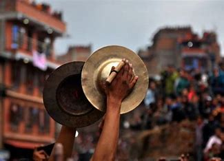

Jhyali
Jhyali is a traditional folk percussion instrument from Nepal.
They are thinly walled, consist of a pair of round, metal plates, resembling cymbals, and are used in both folk and classical music in Nepal.
Unlike most percussion instruments around the world, the Jhyali is played by rubbing the plates with the right hand rising and the left hand descending at the time when they clash.
These percussion instruments are made by a Nepali alloy that is called Pancha dhatu, which means five metals.
The alloy consists of brass, copper, silver, zinc, and gold, and are usually made by blacksmiths.